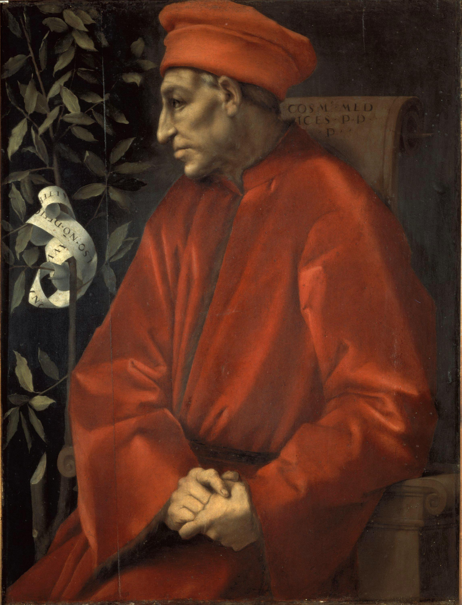
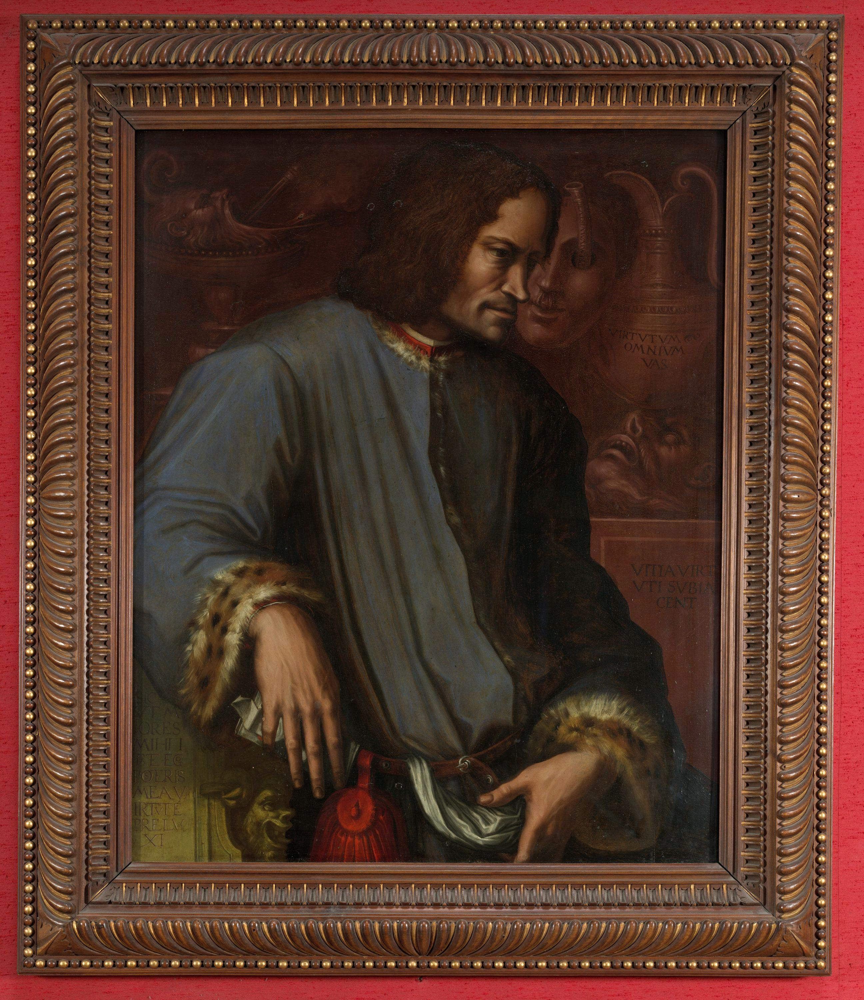

1389—1464
PRIVATE WEALTH, PUBLIC MEMORY
Notes on the Medici.
在城市裡，
讀懂美第奇。
一座修道院、一面壁畫、一件遠方的禮物。
跟著老科西莫與羅倫佐，尋找財富、藝術與
公共聲望之間，值得追問的關係。
S. 由 SONA 閱讀、整理與策劃 EST. 2026

I.THE ELDERCosimo de’ Medici1389—1464
A CITY. A FAMILY. MANY WAYS OF SEEING.
TWO WAYS TO KEEP READING
讀完整脈絡，也讀每日的新問題。
A NOTE FROM SONA
藝術留在眼前，
問題藏在背後。
美第奇的故事，常被寫成一連串天才與贊助人的相遇。我更想追問：誰出了錢、誰作了決定、誰能走進那些空間，又是誰替這些行動留下評價？
這份手札從閱讀與城市空間出發，把史實、學者的解釋和待驗證的問題放在一起。讓美第奇不只是一個熟悉的名字，也成為練習理解歷史的方法。
Sona01 / TWO GENERATIONS
兩個世代，不同的觀看角度。
名字相連，角色與處境卻不盡相同。

1449—1492LORENZO IL MAGNIFICO
羅倫佐「豪華者」
詩歌、收藏、公共工程與外交，構成他的文化世界。「偉大的羅倫佐」如何參與藝術活動，需要逐件分辨出資、仲介、公共職務與後世形象。
讀他的藝術交流案例 ↗先分清家族中的名字 ＋
喬凡尼・迪・比奇家族起點→老科西莫兒子→皮耶羅「痛風者」孫子→羅倫佐「豪華者」曾孫
箭頭表示父子關係；小字均以喬凡尼・迪・比奇為基準。老科西莫的弟弟「羅倫佐・迪・喬凡尼」是另一人；16 世紀的科西莫一世也不是老科西莫。
02 / THREE SITES OF INQUIRY
讓問題，回到它發生的地方。
從空間、委託與物件流動，讀出不同層次的證據。
03 / A CHRONOLOGY
把人物，放回時間裡。
同一個年代，可以同時存在不同的故事。
04 / THE READING ROOM
每一份閱讀，都留下一個問題。
文獻導讀、研究線索，以及值得保留的疑問。
收藏喜歡的卡片，慢慢建立自己的閱讀路徑。
⌕
這裡還沒有符合的手札。
試試其他關鍵字，或回到全部文獻。
05 / THINK LIKE A HISTORIAN
如果換你來判讀，
你會怎麼說？
研究計畫與文獻自測，從原本六題擴充為 100 題。
逐題作答、即時解析，完整掌握案例與方法。
100 題四選一每題附解析可暫停續答
100.
歷史，需要多問一步。
一張付款紀錄，能證明政治認同嗎？
一個「可能」，可以改寫成「確定」嗎？
自測 100 題 ＋ 口試 100 題 ＝ 200 題四選一
06 / BUILD YOUR RESEARCH FOUNDATIONS
100 題自測解析總覽把研究脈絡，讀進自己的話裡。
從研究問題、聖馬可與西斯汀，到贊助、收藏與史料判讀。這是上方 100 題自測的同一份題庫，每題均為四選一。展開題目後直接點選 A、B、C、D，作答後立即顯示正解、解析與來源。
01依主題選題，釐清概念與時間。
02點選四個選項之一，立即核對正解。
03閱讀解析，重練尚未答對的題目。
已答對 0 / 100
1 / 10
07 / DEFEND YOUR RESEARCH PROPOSAL
教授口試選擇 100 題從「我想研究」，走向「我能說明」。
這 100 題也全部是四選一。依研究計畫與文獻爭論模擬教授提問，從四種答法選出最恰當的一項，作答後立即判分並顯示解析；並非教授的實際題單。
01閱讀教授提問，選出最恰當答法。
02立即查看正解、解析與評估重點。
03整理錯題，反覆熟悉證據與方法。
已答對 0 / 100
1 / 10
下載口試 100 題與參考回答 ↓依實際選擇自動判分，作答紀錄保存在目前瀏覽器。
關於這份手札、整理依據與圖像 ＋
本網站由 SONA 策劃，以個人研究講義、2026 年 10 月 13–16 日的文獻精選與研究閱讀指南為整理基礎。主題聚焦十五世紀的老科西莫與羅倫佐，並不把整個美第奇王朝視為同一政治體制。
這是一份閱讀導覽。各卡片註明原作者、版本與閱讀入口；研究假說、學者解釋與可直接核實的史實分別表述。讀者可回到正式出版物查核；原始筆記中的申請資料、完整論文與整份私人文件不作為網站下載內容。
肖像來源：蓬托莫《老科西莫肖像》，1519–1520；瓦薩里《羅倫佐肖像》，約 1533–1534，均為烏菲茲美術館藏，且為身後追繪。案例中的線條圖為概念示意，並非史實平面圖。
收藏與練習紀錄儲存在目前瀏覽器，可於其他瀏覽器分別累積。